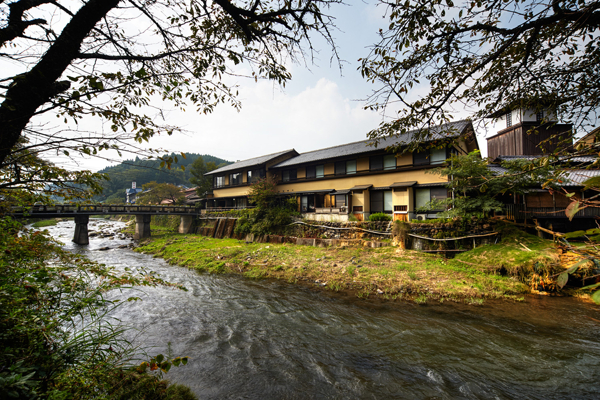
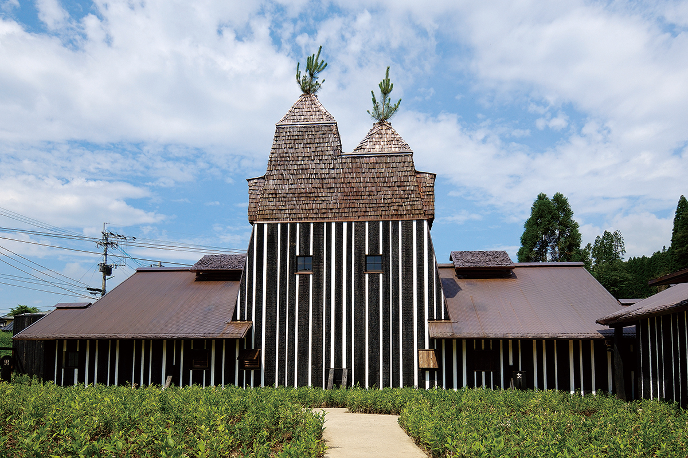
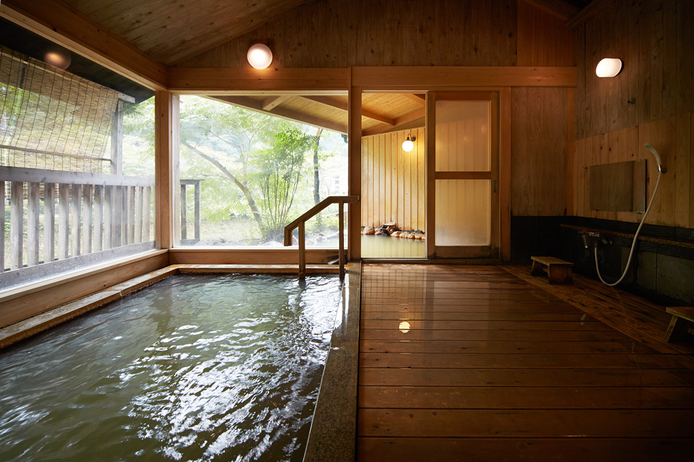
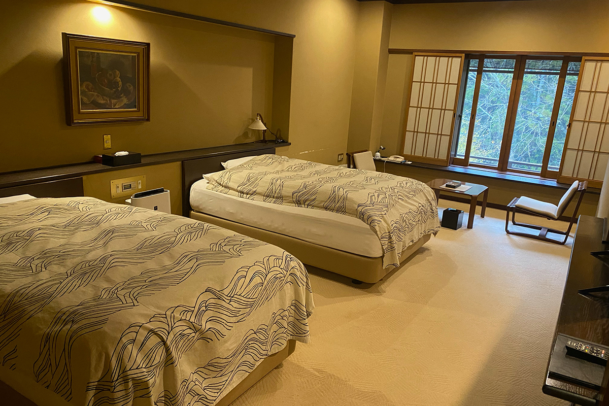
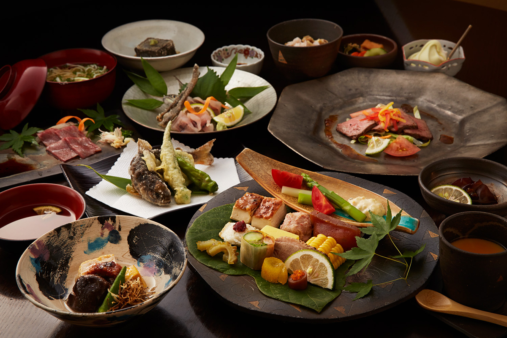
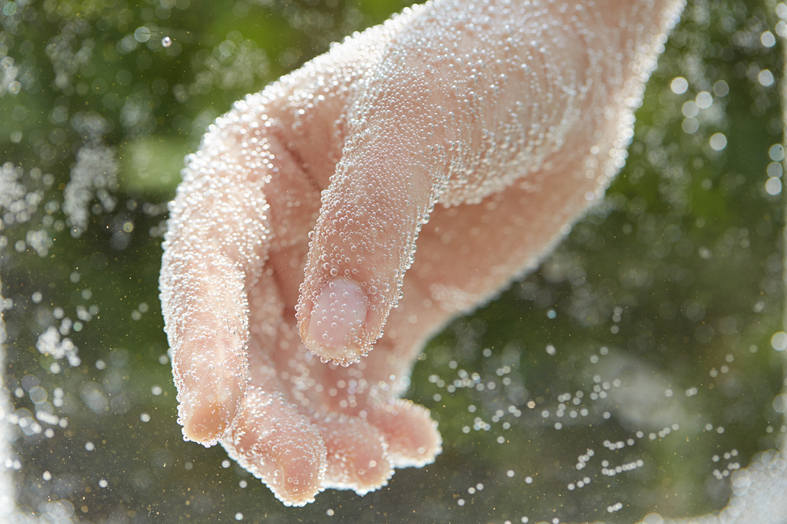

Префектура Оита · онсэн Нагаю · рёкан
Рёкан «Даймару» в онсэне Нагаю: несколько дней в углекислой воде

В онсэн едут не на одну ночь: когда не нужно никуда переезжать, появляется целый свободный день, и вода успевает подействовать. Исследовательница онсэнов советует для такого отдыха рёкан «Даймару» в Нагаю, где из собственного источника льётся свежая углекислая вода.
Вода
Источник, который обновляют каждое утро
Нагаю лежит в горах на западе префектуры Оита, в черте города Такэта, и известен как один из лучших в Японии онсэнов с углекислой водой. Больше всего говорят о «Рамунэ онсэн», где вода шипит мелкими пузырьками, как лимонад. Но у каждой гостиницы здесь свой источник, и у каждого свой характер.

В «Даймару» воду каждое утро в девять часов полностью спускают, купальни моют и наполняют заново. Вода магниево-натриево-кальциевая гидрокарбонатная, минералов в ней 4480 мг на килограмм. Их так много, что на поверхности вода кристаллизуется и затягивается тонкой плёнкой. Углекислого газа в ней 735 мг. Чтобы официально называться углекислым источником, нужно не меньше 1000 мг, но стоит опуститься в воду, как кровь начинает бежать быстрее, кожу покалывает, и она на глазах розовеет.

На выходе из источника вода горячая, около 46,7 °C, и в купальни она поступает напрямую, без повторного использования.
Отдых
Два дня во флигеле над рекой
Если приехать на две ночи, можно не выбирать между вкусной едой и купанием. Для долгого отдыха исследовательница онсэнов советует флигель «Токаро». Ужин подают в отдельной комнате, и ей особенно запомнилась говядина вагю, которую готовят на пару в бамбуковой корзинке над минеральной водой, той самой, что годится и для питья: сочная и насыщенная. Утро начинается с купания и мягкой рисовой каши, сваренной на воде из источника. Так минералы попадают в организм и изнутри.

Ужин здесь яркий и разнообразный: на столе и морская рыба, и речная, и говядина вагю.

Прогулка
Купальни, питьевые источники и вид на горы
Между купаниями приятно гулять по городку. Общественные купальни здесь не похожи одна на другую ни водой, ни зданиями, по дороге попадаются питьевые источники и рынок местных продуктов.

На горной тропе в парке Маруяма открылось «Кафе Кадзэ то цути». Отсюда открывается широкая панорама на горы Кудзю, и исследовательница онсэнов называет это место одним из своих любимых.
Рёкан «Даймару»
- Адрес
- префектура Оита, Такэта, Наоири-мати, Нагаю, 7992-1
- Телефон
- +81 974-75-2002
- Цены / Вход
- с ужином и завтраком от 16 650 до 29 850 иен с человека за ночь, налог и сервис включены (цены 2024 года)
- Заезд / выезд
- 15:00 / 10:00